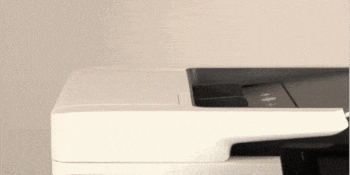

Compuerta del scanner
Al abrir la compuerta del Scanner de nuestra MFP ,ya sea para retirar algún tipo de atasco o realizar un mantenimiento preventivo debemos hacerlo levantando el seguro según se muestra en la siguiente imagen.
